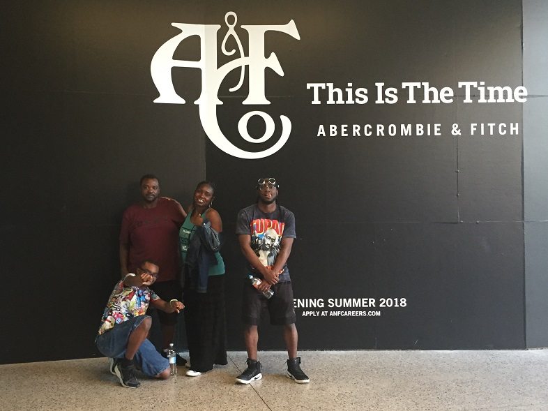
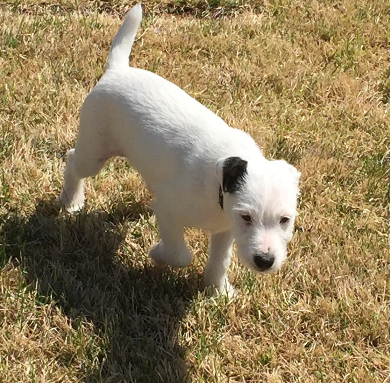
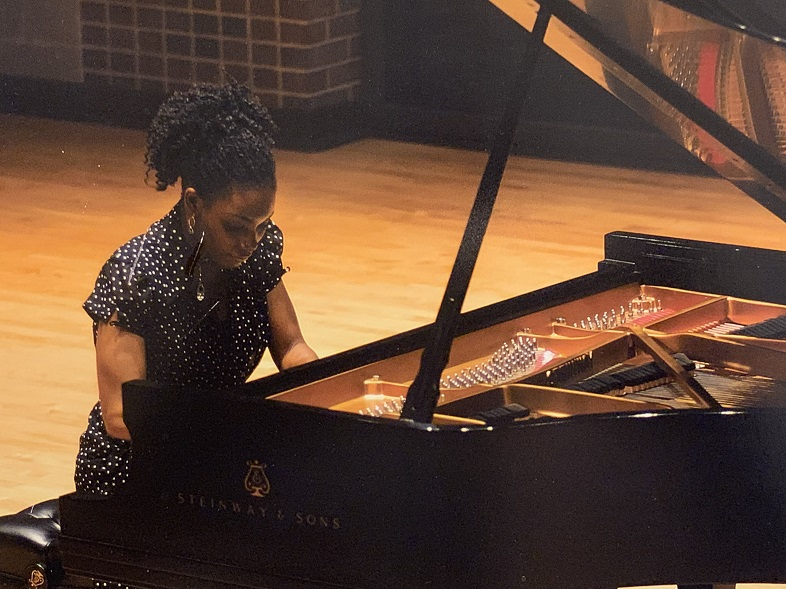

Shelitha Peppers: My Favorite Things

This is a list of my favorite things.
Dream
One of my favorite things to do is dream. I am a vivid dreamer and remember almost every detail of most of my dreams. I can remember colors and smells in my dreams and I can also remember the textures of things that I have felt in my dreams. I look forward to going to sleep in anticipation of drifting into a dream good or bad. I believe that all of them have a purpose which is why I have been journaling my dreams for over twenty years.
Spending time with my family

One of the highllights of traveling to Branson Missouri for me was forcing my family to dress up in costumes and take pictures. As you can see from the expressions on my son's faces, "THEY LOVED IT!!
My husband and I took our sons on a vacation to Vegas to celebrate our 21 wedding anniversary. I suppose this trip made up for the Branson vacations.
Chesterfield and I are working on learning the choreography for Thriller. Stay tuned for the Youtube video.
Playing the Piano
I enjoy playing the piano and giving piano lessons. I'm a classically trained pianist and have been playing for over 30 years. Earlier in my life, I was a piano performance major at Southern Illinois University at Carbondale. One day a person said to me, "Why are you majoring in piano performance?" "You do not need a degree to perform, if you are good, you will perform." After that conversation I left school, went home and started majoring in Business. Although I am not pursuing a career in music, I continue to play and teach.
Hotwing Margarita Night
Every Friday night, my husband and I make hotwings and margaritas. This is how we wrap up our stressful work weeks. Hotwigs and margaritas are the true source of happiness and will keep your marriage going strong.